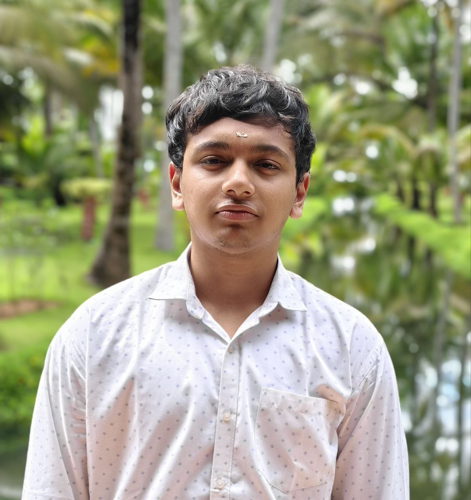

I'm Sayooj S, a B.Tech student in Electronics and Communication Engineering with a specialization in VLSI at KL University, Hyderabad. I'm deeply passionate about CPU microarchitecture, performance verification, and RTL design.
My interests lie at the intersection of hardware and software — from designing pipelined processors in SystemVerilog to building Python-based performance analysis tools. I enjoy understanding how instructions flow through a pipeline, where stalls happen, and how to optimize for both power and performance.
I'm also a strong Linux advocate and comfortable working in Unix-based environments. Whether it's writing shell scripts for automation or debugging RTL simulations on Vivado, I thrive in terminal-first workflows.
Currently seeking opportunities in Hardware Verification, RTL Design, and VLSI where I can apply my skills in performance analysis, infrastructure development, and post-silicon validation.